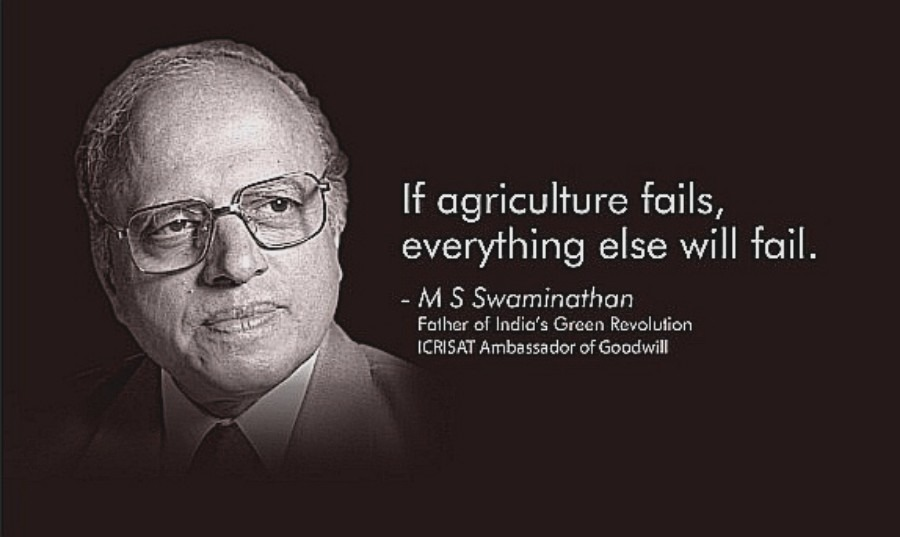

asxcwagj
You Can see a Pie Chart on your right showing Total area under shifting cultivation in NE India
Shifting Cultivation(Hover to know more)
Shifting agriculture, system of cultivation that preserves soil fertility by plot (field) rotation, as distinct from crop rotation. In shifting agriculture a plot of land is cleared and cultivated for a short period of time; then it is abandoned and allowed to revert to its natural vegetation while the cultivator moves on to another plot. The period of cultivation is usually terminated when the soil shows signs of exhaustion or, more commonly, when the field is overrun by weeds. The length of time that a field is cultivated is usually shorter than the period over which the land is allowed to regenerate by lying fallow.

India is one of the world’s largest and most diverse agricultural producers, with a wide range of crops, livestock, fisheries, and forestry. However, before the 1960s, India faced chronic food shortages, low productivity, and dependence on food imports. The situation changed dramatically with the advent of the Green Revolution, which was a period of rapid agricultural transformation through the adoption of new technologies, such as high-yielding variety (HYV) seeds, irrigation facilities, fertilizers, pesticides, and mechanization.
The Green Revolution in India was initiated by Prime Minister Indira Gandhi in 1968, with the support of the Indian Council of Agricultural Research (ICAR), the Food and Agriculture Organization (FAO), and the Rockefeller Foundation. The main architect of the Green Revolution was Dr. M.S. Swaminathan, who is widely regarded as the “Father of the Green Revolution in India”. He was instrumental in introducing the HYV seeds of wheat and rice, which were developed by Dr. Norman Borlaug and Dr. Henry Beachell, respectively. He also promoted the use of improved farm practices, such as multiple cropping, crop rotation, and integrated pest management.
The Green Revolution had a significant impact on Indian agriculture, as it increased the food grain production from 82 million tonnes in 1960-61 to 264 million tonnes in 2019-201. It also made India self-sufficient and surplus in food grains, and reduced the incidence of famine and malnutrition. The Green Revolution also led to the development of other agricultural revolutions, such as the White Revolution (milk production), the Blue Revolution (fish production), the Yellow Revolution (oilseed production), and the Golden Revolution (horticulture development).
However, the Green Revolution also had some negative consequences, such as the overexploitation of natural resources, environmental degradation, loss of biodiversity, social inequality, and health risks. To address these challenges, India has been pursuing a second Green Revolution, which aims to make agriculture more sustainable, resilient, and inclusive. Some of the initiatives under the second Green Revolution include the National Food Security Mission, the National Horticulture Mission, the Rashtriya Krishi Vikas Yojana, the Pradhan Mantri Fasal Bima Yojana, and the Pradhan Mantri Krishi Sinchayee Yojana.
In conclusion, India and Indian scientists have played a vital role in revolutionizing Indian agriculture, by introducing new technologies, improving productivity, enhancing food security, and diversifying agricultural products. However, there is still a need to address the emerging challenges of climate change, resource scarcity, population growth, and market volatility, and to ensure that the benefits of agricultural development are shared by all sections of society.